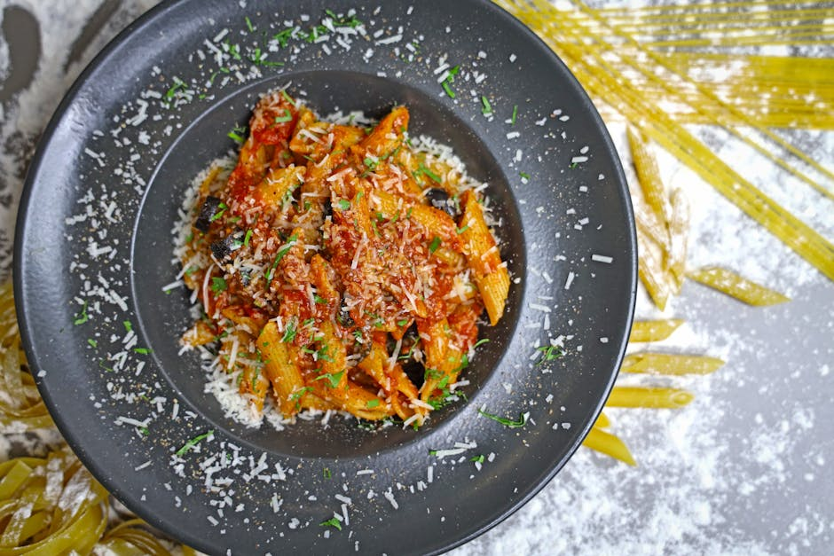
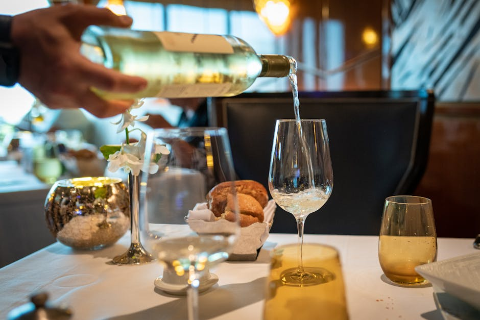

Scopri la vera anima gastronomica della tua città.
CoupureGrid ti guida attraverso i sapori autentici: recensioni verificate, osterie nascoste e le migliori esperienze culinarie locali.
Inizia l'esplorazioneI Nostri Servizi Esclusivi
Tutto ciò di cui hai bisogno per trovare il luogo perfetto per il tuo prossimo pasto.

Ristoranti Consigliati
Selezioniamo accuratamente le migliori location per garantirti esperienze indimenticabili, dai locali stellati alle gemme nascoste del territorio.
Recensioni Ristoranti
Affidati a pareri genuini. Analizziamo e raccogliamo le opinioni per offrirti una panoramica trasparente sulla qualità, l'atmosfera e il servizio.

Cucina Tradizionale
Esplora le radici del gusto. Ti portiamo alla scoperta di trattorie e osterie autentiche dove le ricette di famiglia prendono vita ogni giorno.
Cosa Dicono di Noi
Le esperienze di chi ha già scoperto i sapori autentici grazie alla nostra guida.
"Grazie a CoupureGrid ho scoperto delle osterie incredibili che non avrei mai trovato da solo. Una guida indispensabile per chi ama la vera cucina!"
"Le recensioni ristoranti sono precise e affidabili. Ormai consulto sempre il sito prima di prenotare una cena fuori con gli amici."
"La sezione dedicata alla cucina tradizionale è un vero viaggio nei sapori. Eccellente selezione di trattorie locali, consigliatissimo."
La Nostra Missione
CoupureGrid nasce dalla passione profonda per il buon cibo, l'ospitalità e la convivialità. La nostra missione principale è connettere gli amanti della gastronomia con le realtà ristorative più autentiche e meritevoli del territorio.
Attraverso un'attenta curatela, valorizziamo la cucina tradizionale e le eccellenze locali, offrendo una bussola affidabile per chi cerca sempre il meglio. Che tu stia cercando ristoranti consigliati per un'occasione speciale, o osterie rustiche per un pranzo informale tra amici, siamo qui per guidarti nella scelta perfetta.
Scopri di più su come operiamo
Domande Frequenti
Tutto quello che c'è da sapere sul nostro servizio di guida ai ristoranti.
Come selezionate i ristoranti consigliati?
Valutiamo attentamente diversi fattori tra cui la qualità degli ingredienti, l'autenticità delle ricette, il livello del servizio e, soprattutto, analizziamo le recensioni dei clienti per garantire un'esperienza complessiva di alto livello.
Posso trovare opzioni dedicate alla cucina tradizionale locale?
Assolutamente sì. Dedichiamo ampio spazio e particolare attenzione alle trattorie e osterie storiche che preservano con cura e passione le antiche ricette del territorio.
Le recensioni ristoranti presenti sono verificate?
Ci impegniamo costantemente a filtrare e presentare opinioni reali e genuine, per offrirti una valutazione onesta, imparziale e totalmente trasparente di ogni singolo locale inserito nella nostra guida.
Il servizio copre solo ristoranti di lusso o anche piccole trattorie?
La nostra guida è pensata per tutti. Copriamo l'intero spettro della gastronomia locale: potrai trovare dalle piccole osterie a conduzione familiare perfette per un pranzo veloce, fino alle location più esclusive per cene di gala.
Come posso suggerire un ristorante non presente nella guida?
Siamo sempre alla ricerca di nuove eccellenze! Puoi utilizzare il nostro modulo di contatto presente in fondo alla pagina per segnalarci le tue scoperte culinarie e aiutarci ad arricchire costantemente la nostra selezione.
Mettiti in Contatto
Hai suggerimenti per nuovi ristoranti consigliati o domande sulla nostra piattaforma? Scrivici.